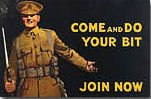
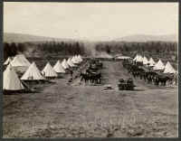
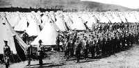
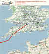
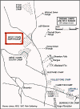
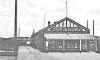

|
AUGUST A fine summer Tuesday
dawns over Quebec City on this August 4. Charles Consigny goes early to his job as a machinist (steam
fitter)
in St-Roch, the prosperous industrial and
commercial district of the Lower Town.
He feels great excitement in
the air and, like everyone, is on the lookout for the latest
news. Many go to the city's newspaper offices
to read the latest dispatches from
Europe. Everyone holds their breath. Then the
official announcement finally comes:
"England declares
war on Germany, following the invasion of Belgium. The
King asks his Dominions to join forces to
support the British Empire."
 The
news spreads like wildfire; patriotic fever
takes hold of many, and a spontaneous parade
forms in the streets with flags, banners and patriotic
songs. Hundreds of people gather to
hear speeches by politicians, Messrs. Sévigny and
Lévesque, who declare that "French Canadians
are proud that their adoptive mother country honours its alliances
and comes to the aid of France, the land of their ancestors, by
declaring war on Germany".
 The
very next day, Canada officially agrees
to send an imperial contingent. Colonel Hughes is
in charge of organizing it. The country has only a small
regular army, so it is decided that the recruiting of
volunteers will run from August 5 to midnight on August 12. In Quebec, the
mobilization centre will be Valcartier, where they plan to
train twenty thousand men before shipping them to
England. Two thousand targets are bought for this
training. On August 10, the newspapers report that Col.
Hughes is visiting Camp Valcartier for a general inspection
of the facilities prepared to receive the
mobilized men soon.
 Charles, a young bachelor of twenty-one,
is caught up
in the general enthusiasm (photo
opposite, 1919). Tempted by adventure, he
goes to a recruiting office. Yes, this war began in
high spirits! La fleur au fusil (a flower in the rifle barrel). Men of all
backgrounds left jobs and families to sign up. They did it
out of a sense of duty, for their country, out of
heroism, to wear a uniform and be admired, to see the world, to live a new
experience, ...
The newspapers, the politicians, everyone proclaimed that "it would all
be over by Christmas", so why not
take up the
challenge? Charles, a young bachelor of twenty-one,
is caught up
in the general enthusiasm (photo
opposite, 1919). Tempted by adventure, he
goes to a recruiting office. Yes, this war began in
high spirits! La fleur au fusil (a flower in the rifle barrel). Men of all
backgrounds left jobs and families to sign up. They did it
out of a sense of duty, for their country, out of
heroism, to wear a uniform and be admired, to see the world, to live a new
experience, ...
The newspapers, the politicians, everyone proclaimed that "it would all
be over by Christmas", so why not
take up the
challenge?
 Charles's application is accepted, and he has little
time to get ready. He leaves his job and says goodbye to his
many uncles, aunts and cousins, who all live
in the neighbourhood. He goes to pray at the graves of his parents and
grandparents in the
Saint-Charles cemetery. (Photo
opposite: the Thibaudeau family monument, where Charles's maternal grandparents
and mother are buried, perhaps his father too) Charles's application is accepted, and he has little
time to get ready. He leaves his job and says goodbye to his
many uncles, aunts and cousins, who all live
in the neighbourhood. He goes to pray at the graves of his parents and
grandparents in the
Saint-Charles cemetery. (Photo
opposite: the Thibaudeau family monument, where Charles's maternal grandparents
and mother are buried, perhaps his father too)
An orphan, Charles entrusts his few belongings to
his older sister Crescence, whom he names as next of kin
on the army's official documents. His only other family
is his young brother Antoine, eighteen, who no doubt lives with
their big sister. Charles probably boards with his sister too. In those days you
stayed with family until you married, even if the flats were
cramped.
Crescence, twenty-five, has been married for four
years to Rolland Pleau, a shoemaker. They live at 28 St-Léon,
in the St-Sauveur district; they have a son and are expecting another child in
November.
Rolland has a pretty cousin, Ézilda Côté
(photo
opposite, 1919). Originally from Quebec City, she has lived in Montreal for about
ten years. Are Charles and Ézilda already engaged,
or was it during the correspondence he would send her
from Europe that their bond grew stronger? We do not know
for now; the only postcards we have date
from 1919. Does Charles go to Montreal to say goodbye to Ézilda? He probably
does not have time; everything is happening so fast.
 On
Thursday, August 13, Charles goes to the Gare du Palais and boards
the train taking the Quebec City recruits to Camp Valcartier. Recruiting ended the day before; the
number of volunteers is so great that the Canadian
government is considering forming a second contingent in
the coming months. Many Americans have volunteered,
most of them of Canadian origin. On
Thursday, August 13, Charles goes to the Gare du Palais and boards
the train taking the Quebec City recruits to Camp Valcartier. Recruiting ended the day before; the
number of volunteers is so great that the Canadian
government is considering forming a second contingent in
the coming months. Many Americans have volunteered,
most of them of Canadian origin.
 The following
weeks are very busy. Charles has medical
examinations and is vaccinated against typhoid and
smallpox. He is issued a uniform and gets used to military life and
equipment. Minimal training begins on the
Valcartier plain, at the foot of the Laurentians. It would
continue in England, the priority being to send the
first contingent there as quickly as possible, before winter. The government also
has to find the five to six thousand horses the contingent needs.
SEPTEMBER
On September 26, Charles officially signs his
enlistment in the Canadian Over-Seas Expeditionary Force. He
is given service number C43804. He thereby undertakes to "serve
in any arm and for a period of one year or for
the duration of this war between England and
Germany, plus six months after the end of the war".
Charles swears allegiance to King George V and his
successors, and undertakes to defend him and to obey all
Generals and officers set over him. "So help me
God".
His
pay is one dollar a day, plus a ten-cent bonus as
"field allowance" . This pay would not change for the whole of
the war. He is assigned to the Unit Divisional
Ammunition Column. In fact, the D.A.C. is a
supply unit.
|

After a few weeks of training, the first
contingent of the Canadian Expeditionary Force sails
for England, forming the largest convoy that
had ever crossed the Atlantic: more than
thirty thousand men
divided among infantry, artillery, engineer,
medical and veterinary, and signals units, as well
as the supply corps.
|
FROM THE VALCARTIER
PLAIN
TO SALISBURY PLAIN
OCTOBER
On Sunday, October 4,
Charles's family come to see him off one
last time at the port of Quebec. Charles boards the S.S.
Megantic, a White Star Line liner built in
Belfast in 1908 (photo opposite).  It is
one of the ships requisitioned by the government to carry troops to England.
The ships of the Canadian Expeditionary Force reach
Great Britain from October 14 on. The Quebec City newspapers
report that the Canadian convoy is welcomed
joyfully by the local people, who come out to greet,
thank and
encourage our soldiers. It is
one of the ships requisitioned by the government to carry troops to England.
The ships of the Canadian Expeditionary Force reach
Great Britain from October 14 on. The Quebec City newspapers
report that the Canadian convoy is welcomed
joyfully by the local people, who come out to greet,
thank and
encourage our soldiers.
 On Friday afternoon,
October 16,
Charles lands at Devonport, near Plymouth, with
more than four hundred soldiers and twenty-four officers of the
D.A.C. unit. In columns, they all march two and a half
miles to Millbay station. Late in the evening,
they ride toward Patney, arriving in the middle of the night.
Fifty sick men stay at Patney under
a doctor's care. The symptoms are those
of food poisoning.
The rest of the troop marches with their equipment to West
Down North Camp on
Salisbury Plain, arriving early in the morning.
A hot meal is served to them, and the major
thanks the camp officer for it. Besides, nearly a hundred tents, some of them
with floors, have been put up for them. At noon, two
fires are set up under shelters and rations
handed out for lunch. The whole afternoon is spent driving
stakes to tether the horses. In the evening, the fifty
sick men rejoin the troop; they seem no
better.
|
 That evening the weather is fine and
cold. Charles spends his first night on Salisbury
Plain, That evening the weather is fine and
cold. Charles spends his first night on Salisbury
Plain,
Wiltshire, England.
Charles is a few miles from Stonehenge,
a megalithic monument raised thousands
of years ago.
Salisbury Plain is a
vast area of two hundred square miles that has long been
reserved almost exclusively for military manoeuvres.
As for the
city of Salisbury, north-west of Southampton, it goes back to
the Iron Age; the Romans called it " Sorviodunum ".
According to the Arthurian legends, it is said to be the place called
"Camlann " where King Arthur received
his death blow.
|

British soldiers of
various origins visiting Stonehenge
|

Salisbury Plain; Charles's camp is West Down North Camp
|

In the camps the soldiers had a
general store, a YMCA and various other
services...
|
|
|